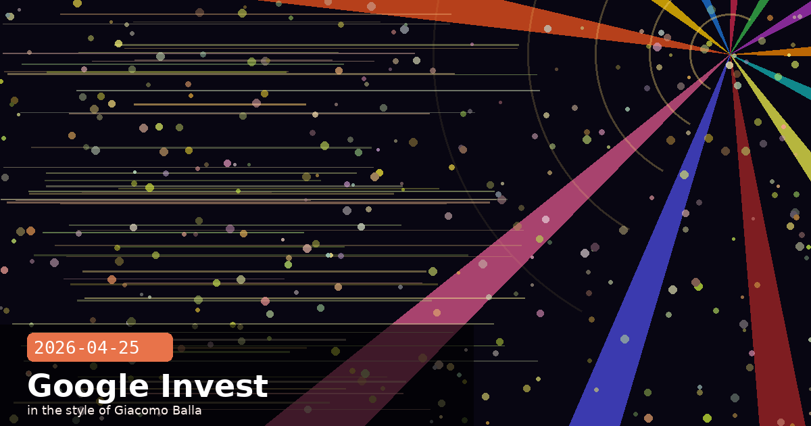

Google's $40B Bet on Anthropic & 2026 Election Safeguards

🧭 Google Commits Up to $40 Billion in Anthropic — Cash, Compute, and Mythos Access
Google has agreed to invest up to $40 billion in Anthropic in a two-phase deal reported late April 24 and confirmed April 25. The first phase commits $10 billion in cash immediately, at a valuation of $350 billion. The second phase provides up to a further $30 billion contingent on Anthropic hitting specific development milestones, though the targets have not been publicly disclosed. The announcement comes just days after Amazon disclosed its own $25 billion commitment, leaving Anthropic fielding two of the largest private-company investment tranches in technology history in the space of a single week.
What Google gets
Beyond a financial return on equity, the deal includes a substantial compute component: Google has committed to providing Anthropic with five gigawatts of processing capacity over the next five years through Google Cloud. This continues and substantially expands the existing Google Cloud relationship, where Anthropic is already one of the largest single customers. A large share of the investment is expected to cycle back into Google Cloud revenue as Anthropic pays for TPU-based training and inference at scale.
Google also gains early access to Anthropic's unreleased Mythos model, making it one of a small handful of organisations with insight into Anthropic's frontier defensive-security system before any potential broader release. That access is strategically significant given how closely both companies now compete for enterprise AI workloads via Google Cloud and Vertex AI.
Where this places Anthropic's funding trajectory
Anthropic reported a $30 billion annualised run rate this month — up from approximately $9 billion at the end of 2025, a more-than-threefold rise in under four months. The combined Amazon and Google commitments, if fully exercised, would represent a $65 billion infusion on top of existing investment. No AI company at any stage has attracted this concentration of committed capital from two hyperscalers simultaneously.
What the compute commitment means for Claude's capabilities
Five gigawatts of Google Cloud capacity over five years is not a rounding error. For context: training runs for frontier models can consume hundreds of megawatts for weeks. The deal effectively guarantees Anthropic the training and inference headroom to develop and serve the next two to three model generations without facing the kind of compute bottleneck that has constrained smaller AI labs. Developers building on Claude's API can expect continued model capability improvements on a regular cadence — the infrastructure to deliver them is now secured.
The partner-and-rival dynamic
Google DeepMind and Anthropic compete directly: both train frontier models, both bid for enterprise AI contracts, and Google's Gemini product line competes head-to-head with Claude in the consumer and developer market. The investment deepens a tension that has characterised the AI industry since 2023: the hyperscalers are simultaneously building their own models, funding rivals, and providing infrastructure to those same rivals. For Anthropic, it means the two most powerful compute providers in the world are financially aligned with its success — a structural hedge against any single infrastructure partner becoming a bottleneck.
Ahead of the 2026 US midterm elections, Anthropic published a detailed update on the safeguards it has deployed to prevent Claude from being misused to influence electoral outcomes. The report covers three areas: political neutrality testing, usage-policy enforcement, and voter information surfacing. This is the most detailed public accounting Anthropic has offered of how it manages election-adjacent use of Claude at model level.
Neutrality testing
Before each model release, Anthropic runs evaluations designed to measure how consistently and impartially Claude engages with politically charged prompts. The test is designed to detect asymmetry — whether Claude treats prompts expressing one political viewpoint with more or less depth, engagement, and analytical rigour than an equivalent prompt expressing the opposite view. Opus 4.7 scored 95% and Sonnet 4.6 scored 96% on this assessment. Anthropic has published the methodology alongside the scores, which is new compared to prior election-year reports.
Policy enforcement and adversarial testing
Claude's usage policies prohibit using the model to run deceptive political campaigns, create deepfake or manipulated content to influence political discourse, commit voter fraud, interfere with voting infrastructure, or spread misinformation about voting processes. Anthropic supplemented these policies with a 600-prompt adversarial test suite — 300 malicious prompts designed to elicit policy violations, and 300 legitimate election-related queries — to measure how reliably the models stay within bounds under adversarial pressure. Opus 4.7 responded appropriately to 100% of test prompts; Sonnet 4.6 hit 99.8%.
Anthropic also tested whether the models could carry out an influence operation autonomously — planning and executing a multi-step coordinated campaign without human prompting. With safeguards enabled, the latest models refused nearly every such task. A dedicated threat intelligence team monitors for coordinated abuse in production and can intervene at the platform level.
Voter information surfacing
For users who ask election-related questions, Claude now surfaces a banner directing them to TurboVote, a nonpartisan tool from Democracy Works that provides current information on voter registration, polling locations, election dates, and ballot details. The trigger rate — how often an election-related query correctly surfaces the banner — is 92–95% across Claude's deployments.
What this means for operators and developers
If you are building an application that may field election-related queries — newsrooms, civic tech tools, HR platforms — you should be aware that Claude will surface the TurboVote banner on qualifying prompts by default. Operators can customise or suppress this behaviour via the system prompt if the context warrants it (e.g., a platform explicitly focused on non-US elections), but should document the reasoning. Anthropic's transparency on methodology also means you can audit whether model updates change the neutrality score before deploying new versions in politically sensitive contexts.
Claude Code v2.1.120 shipped on April 25 with a focused set of reliability fixes, most of which address regressions introduced over the past two releases. Here is what changed.
Non-streaming retry cap reverted
v2.1.110 introduced a cap on non-streaming fallback retries, intended to reduce long waits during API overload events. In practice the cap traded one problem for a worse one: instead of waiting, sessions would now fail outright. v2.1.120 reverts this change. If you were experiencing unexpected hard failures during peak API load, this fix should restore the prior, more forgiving behaviour.
Terminal display fixes
Two display regressions are resolved:
iTerm2 + tmux tearing — display tearing occurred when terminal notifications were sent in iTerm2 running inside a tmux session. Fixed.
@ file suggestions loop — in non-git directories, the @ file suggestion list was re-scanning the filesystem on every conversation turn, causing noticeable input lag. Fixed by caching the scan result per session.
LSP, session, and /clear fixes
LSP diagnostics — language server diagnostics were appearing after edits in contexts where they should have been suppressed. Fixed.
/resume tab-completion — pressing tab in the /resume picker was auto-selecting and resuming a session before the user confirmed. Fixed.
/context grid rendering — layout issues in the /context panel grid view. Fixed.
/clear and session names — running /clear was dropping session names set by /rename. Fixed; /clear now preserves the session name.
Additional fixes
CLAUDE_CODE_EXTRA_BODY output_config.effort was causing 400 errors on sub-agent calls — fixed.
Prompt cursor disappearing when NO_COLOR is set — fixed.
ToolSearch ranking for pasted MCP tool names — fixed.
PowerShell tool permission checks — corrected an edge case where PowerShell commands on Windows required unnecessary re-approval.
When to update
If you use Claude Code in a tmux + iTerm2 setup, work in non-git directories, or have been seeing unexpected hard failures during API overload, updating to v2.1.120 immediately is worthwhile. Run claude update or npm i -g @anthropic-ai/claude-code@latest to get it.